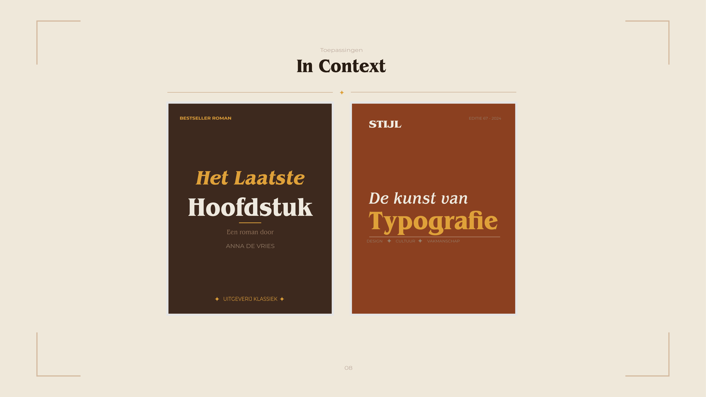
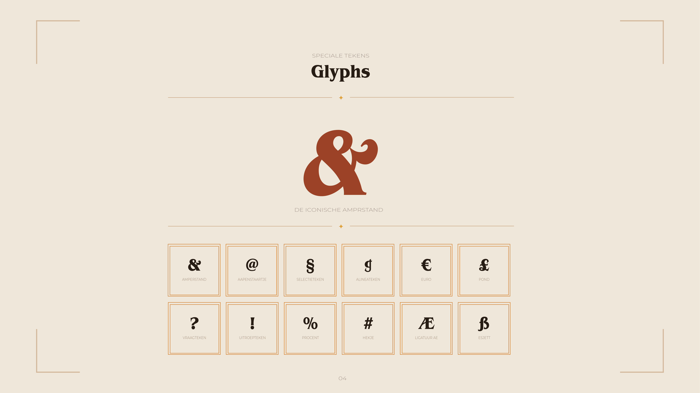
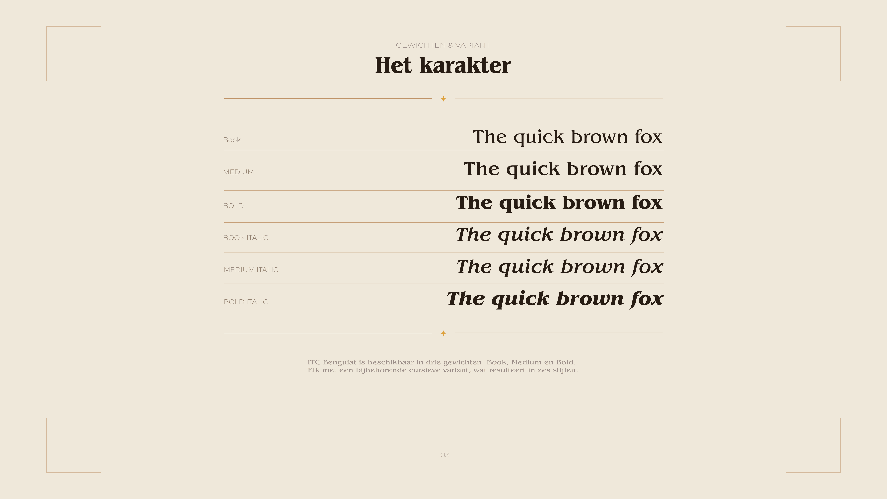

Project
Typografisch Fontfolio
Lettertype
ITC Benguiat
Omvang
8 Pagina's
Stijl
Retro / Editorial
01 — Opdracht
Het Karakter van de Letter
In deze opdracht werd gevraagd een fontfolio te ontwerpen van minstens 8 pagina's waarbij de visuele stijl volledig is afgestemd op de persoonlijkheid van het gekozen lettertype. Ik koos voor ITC Benguiat, een expressief en retro lettertype uit 1977 dat bekend staat om zijn warme, decoratieve Art Nouveau-invloeden.
02 — Concept
Retro Design voor een Retro Font
Het ontwerp vertaalt het retro-gevoel van ITC Benguiat in de layout. De pagina's vloeien in elkaar over door een doorlopende stijl. Binnen het fontfolio licht ik de verschillende gewichten (Book, Medium, Bold en hun Italics) uit, evenals de bijzondere anatomische eigenschappen en opvallende glyphs (zoals de iconische ampersand en sierlijke staarten).

03 — Resultaat
Een Editorial Ervaring
Door het gebruik van hoog contrast en zorgvuldige spatiëring fungeert de bundel als een ode aan de legendarische typograaf Ed Benguiat. De eindpresentatie werd afgewerkt met hoogwaardige mockups om de tastbaarheid van het design te simuleren.

